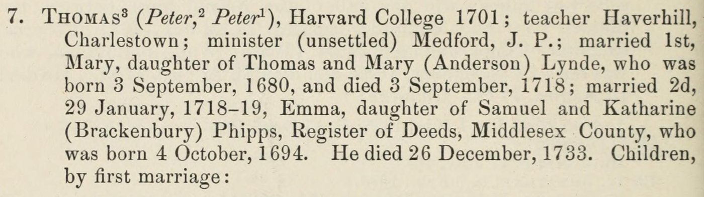

Biography
Thomas Tufts, a son of Capt. Peter Tufts and a Harvard graduate of 1701, was sought by two towns as their minister.
Weston, then the western precinct of Watertown, chose him in 1707:
“July 16, 1707, they chose Mr. Thomas Tufts, but he declined the call in September.”
History of the Town of Weston, Massachusetts, 1630–1890 (1913), p. 6. Internet Archive
He was next drawn into Malden’s long contest over a successor to the Rev. Michael Wigglesworth. Both he and another candidate appeared in Malden at the same time, each wishing to preach, and the matter went to the General Court, which ordered:
“The Court do unanimously agree and conclude as followeth: That Mr. Thomas Tufts is a suitable person, qualified as aforesaid for the work of the ministry in that town of Malden, and see cause to settle him there in that work”
History of Middlesex County, Massachusetts, ed. D. Hamilton Hurd, vol. 3 (1890), p. 491. Internet Archive, quoting the Malden Bi-Centennial Book, pp. 158–159. (Transcribed from the printed page.)
The Court ordered the town to pay him £70 a year during his service there, and “Mr. Tufts entered on his ministry in compliance with the order which the Court had issued” (History of Middlesex County, Massachusetts, ed. D. Hamilton Hurd, vol. 3 (1890), p. 464. Internet Archive). A committee of the church then petitioned the Court to suspend its order; the petition was granted, and the Rev. David Parsons was ordained at Malden early in 1709 (History of Middlesex County, Massachusetts, ed. D. Hamilton Hurd, vol. 3 (1890), p. 464. Internet Archive).
See also his brother Rev. John Tufts.
Service Record
Town: Medford; candidate for the ministry at Weston and Malden, Mass. · Dates: [dates not in sources cited]
No military service is recorded for him.
Family Connection
Father: Capt. Peter Tufts (c. 1648–1721) (NEHGR 51, pp. 302–303, as cited on his father’s page). Brothers included Rev. John Tufts and Dr. Simon Tufts (1700–1747).

7. Thomas3 (Peter2 Peter1), Harvard College 1701; teacher Haverhill, Charlestown; minister (unsettled) Medford, J. P.; married 1st, Mary, daughter of Thomas and Mary (Anderson) Lynde, who was born 3 September, 1680, and died 3 September, 1718; married 2d, 29 January, 1718-19, Emma, daughter of Samuel and Katharine (Brackenbury) Phipps, Register of Deeds, Middlesex County, who was born 4 October, 1694. He died 26 December, 1733. Children, by first marriage :
Transcription of the clipping above: “Tufts Genealogy—Earlier Generations,” New England Historical and Genealogical Register 51 (July 1897), p. 302. View the page scan
Relatives with profiles on this site: brother Rev. John Tufts (Harvard 1708); father Capt. Peter Tufts (c. 1648–1721); brother Dr. Simon Tufts (1700–1747).
Spouse(s)
No marriage is recorded in the sources cited here.
Authoritative IDs / Index Numbers
| Source | ID / status |
|---|---|
| Perseus person index (auth=) | Note: Pending further work. |
| Find a Grave memorial | Note: Pending further work. |
| Brooks, History of Medford (1855) register no. | Note: Pending further work. |
| Mass. Soldiers and Sailors | Not yet checked for this page |
| DAR ancestor no. | Note: Pending further work. |
| FamilySearch ID | Note: Pending further work. |
| Geni profile | Note: Pending further work. |
| WikiTree ID | Note: Pending further work. |
| Town / vital records | Medford VRs not yet checked by volume and page |
Only IDs confirmed against dates and family are given as matches. “Not yet checked” means the source has not been searched; “Checked, not found” means it was searched without a match.
⚑ Unverified
Dates of birth and death, and how long he preached at Malden before the Court suspended its order, are not given in the passages quoted. Note: Pending further work.
Links and Resources
Every source, record, map, survey, marker and artifact tied to this person, gathered in one place. Page numbers are given where a book is cited.
Digitized Books and Journals
- History of the Town of Weston, Massachusetts, 1630–1890 (1913), p. 6. · Internet Archive
- History of Middlesex County, Massachusetts, ed. D. Hamilton Hurd, vol. 3 (1890), p. 491. · Internet Archive